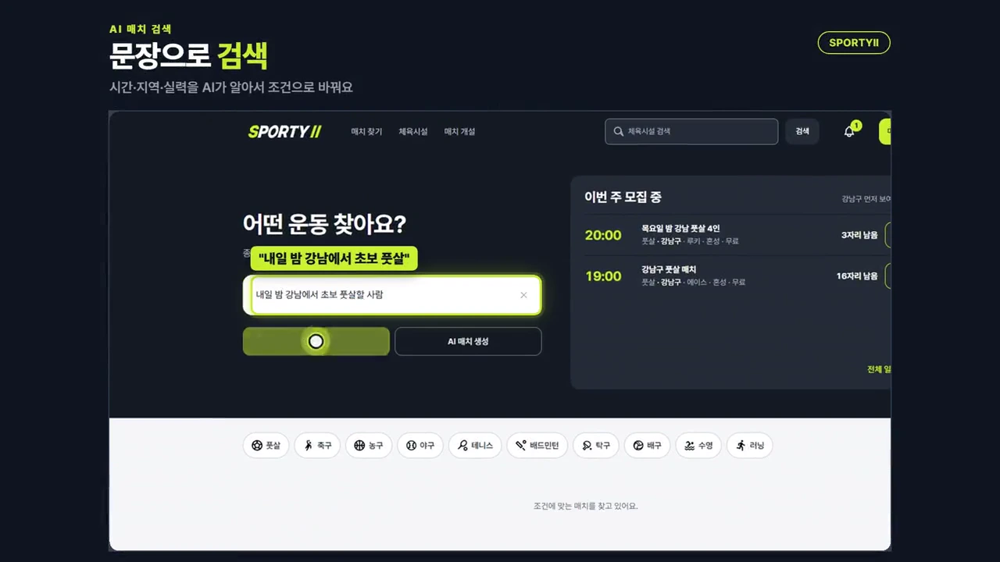
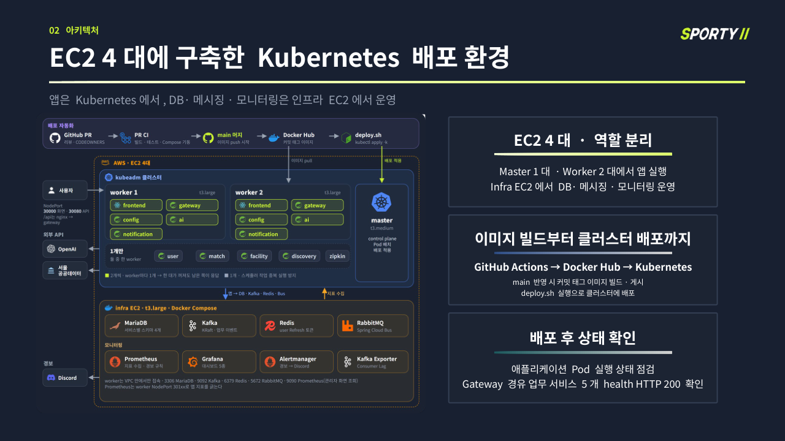
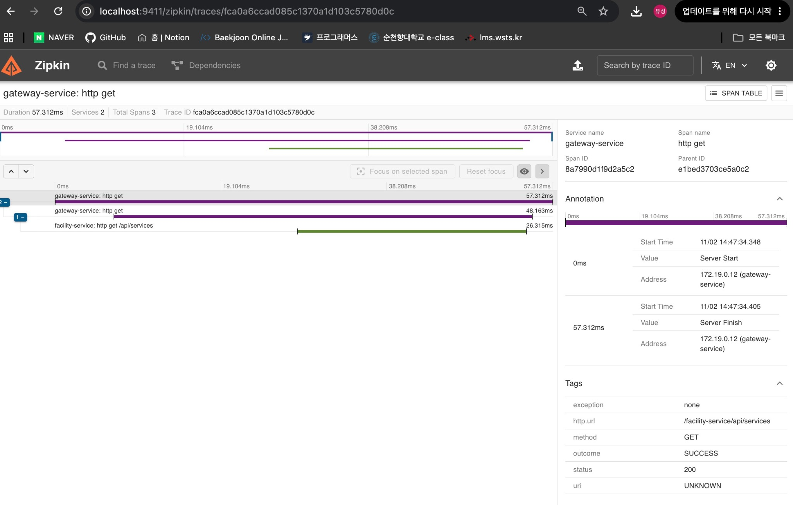

8인 팀 프로젝트 · 생활체육 매칭 서비스
Sporty
함께 운동할 사람을 찾고,
매치에 참여하는 서비스.
원하는 운동과 시간, 지역을 기준으로 매치를 찾고 직접 개설합니다. 참가 신청과 보증금 처리, 대기 등록과 자동 승급까지 참여 과정을 연결했습니다.
서비스 시연 보기 · 1분 33초
- 내 역할
- 인프라 환경 구성 · 컨테이너 경량화 · 배포 · 요청 추적
- 활용 기술
- Docker / Kubernetes / AWS / Kafka / Zipkin
운동 약속을 잡는 과정을
한곳에서.
운동할 사람과 장소를 따로 찾는 불편에서 출발했습니다. 팀은 자연어 검색부터 참가 확정과 대기자 알림까지 이어지는 생활체육 매칭 서비스를 구현했습니다.
조건을 말하면 검색
시간·지역·실력 등을 자연어로 입력해 매치를 찾고, 시설 정보와 예약 상태를 확인합니다.
직접 만들고 참가
AI로 매치 생성 항목을 채우고, 원하는 매치에 참가합니다. 보증금 내역은 마이페이지에서 확인합니다.
자리가 나면 자동 승급
정원이 찬 매치에는 대기자로 등록합니다. 취소가 발생하면 대기 순서에 따라 승급하고 알림을 받습니다.
팀 서비스 시연 · 1분 33초
검색부터 참가까지.
AI 검색, 매치 참가와 보증금 처리, 시설 조회, AI 매치 생성, 대기자 자동 승급을 실제 화면으로 확인할 수 있습니다.
나유성 · 인프라 담당
서비스가 함께 실행되는
환경을 구성했습니다.
Compose·Kafka 환경과 Kubernetes·AWS 배포를 맡았습니다. Docker 이미지 경량화, 분산 요청 추적, 서비스와 DB의 시간대 설정을 적용하고 실행 결과를 확인했습니다.
실행 환경과 배포
Compose 환경을 구성하고, 애플리케이션을 Kubernetes에 배포했습니다. DB·메시징은 별도 인프라 EC2에서 운영했습니다.
이미지 크기 25.9% 감소
7개 서비스 이미지를 경량화했습니다. Gateway는 150.5MiB에서 111.5MiB로 줄였고, 새 이미지 기동 후 HTTP 200을 확인했습니다.
요청·시간대 검증
6개 서비스에 추적 설정을 적용했습니다. 알림의 9시간 차이는 시간대를 통일한 후 API 응답과 DB 저장값을 대조했습니다.
EC2 4대, 역할을 나눈 배포.
Master 1대와 Worker 2대로 애플리케이션 클러스터를 구성하고, 인프라 EC2 1대에 DB·메시징·모니터링을 두었습니다. 배포 후 Pod 상태와 Gateway 경유 업무 서비스 5개의 health 응답을 확인했습니다.

같은 요청이 어느 서비스를
거쳤는지 확인했습니다.
Gateway, User, Match, Facility, AI, Notification에 추적 설정을 적용했습니다. PR #81에는 매치 조회 시 Gateway·Match·User 호출이 같은 Trace ID로 연결되는지 확인한 기록이 있습니다.
아래 캡처는 별도의 Gateway → Facility 시설 조회 요청입니다. 2개 서비스와 3개 span이 표시되며, 선택한 Gateway span의 응답은 HTTP 200입니다.
57.312ms는 이 요청 한 건의 trace duration입니다. 평균 응답시간이나 성능 개선 수치로 사용하지 않았습니다.

팀 장애·복구 시연 · 2분 20초
장애 상황에서도
동작을 확인했습니다.
시설 서비스 중단 시 매치 조회와 생성의 처리 차이, 알림 서비스 복구 후 메시지 처리, 탈퇴 보상 처리와 권한 검증을 시연합니다. 영상의 모니터링·Saga·업무 기능은 각 담당자가 구현한 팀 결과입니다.